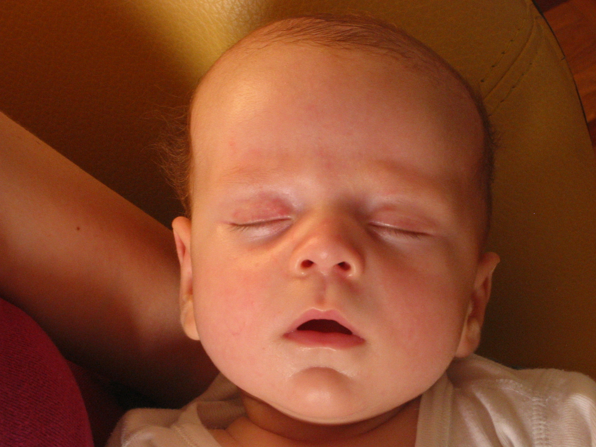
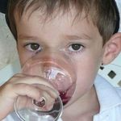
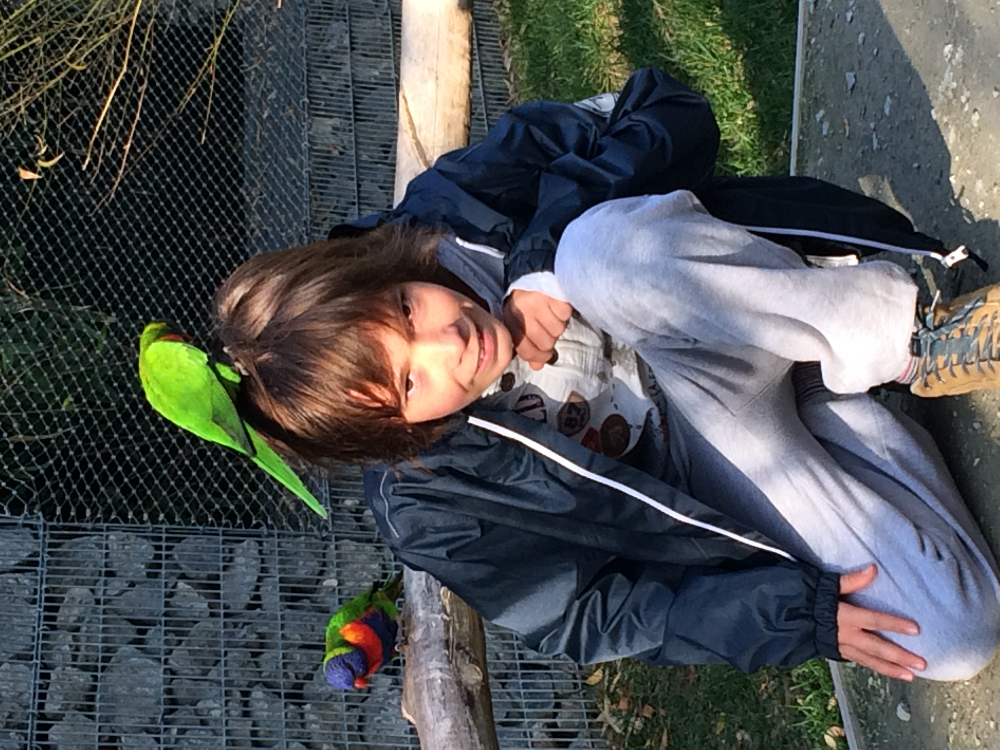
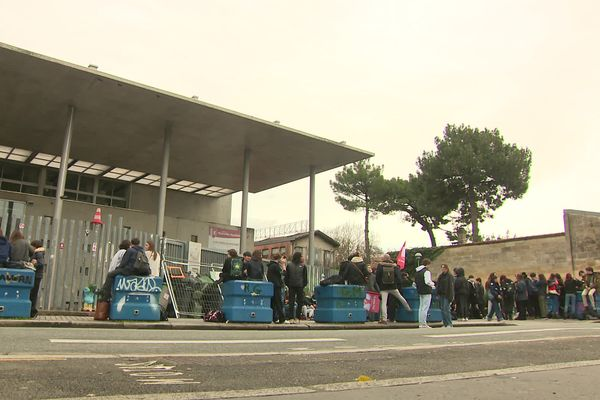

Historique tres detaillé
RETOUR ACCUEIL
NAISSANCE
Je nais alors que mes parents mangent un mezze libanais :

SPAWN DANS LE MONDE
Je suis né précisement dans une clinique du 14e arrondissment de Paris puis j'ai vécu à Paris 20e sur le Boulevard de Charonne comme le massacre de Charonne c'est le même endroit.
- 2005 : Ma soeur naît (Agathe a sister) (l'avez vous)
- 2006 - 2009 : école maternelle Plaine grands champs. Ma meilleure amie s'appelle Moïra et elle adore les cailloux
- 2008 : JUDO : je fais du judo
- 2009 : découverte de l'acool

- 2009 - 2010 : école élémentaire Plaine. Moïra est abusément forte aux échecs et moi abusément nul. J'étais amoureux de Alice alors j'écrivais son nom sur le sol de la cour de récreation(?)
Deux amis imaginaires Taufane et Garouise.
Ma nounou Salomé me garde très souvent.
Je grandis dans la pollution et le stress de la ville.
La nuit, la lumière tournante de la tour Eiffel éclaire l'appartement par la baie vitrée.
La voisine sénile du dessous qui s'occupe seule de son mari exhibitionniste atteint de la maladie d'alzheimer frappe la plafond à coup de balais car on fait trop de bruit.
Elle accroche des fourchettes à la rembarde de son balcon pour défendre son gateau que l'on serait venu voler une nuit.
Le lendemain elle nous offre un panier de fruits pour s'excuser.
VIVRE DANS LA POSTMODERNITE
- 2010 - 2018 : école puis collège à Mérignac, les traumas m'ont enlevé la plupart des souvenirs
- 2012 environ : je commence à apprendre le saxophone et le solfège 🎷 🎶
- 2013 : Je commence la voile en optimist puis openbic
- 2015 : JUDO : j'arrete le judo
- 2017 : je deviens dompteur d'oiseaux

- 2018 - 2021 : lycée Magendie à Bordeaux, j'arrète le saxophone en terminale❌🎷
Lycée Magendie en grève

- 2020 : 1er travail: effeillage de vignes, mal au dos
- 2021 - 2023 : prépa MP2I puis MPI au Klébar à Strabourg
Periode vraiment tranquille. Je ne travaille pas mais j'ai des bonnes notes.
Le collège a été assez dur socialement mais comme pour beaucoup rien d'anormal la dessus, d'aucuns dirait d'une certaine banalité.
En prépa je découvre ce que c'est de vivre tout seul et pouquoi c'est bien les amis et la famille.
VIVRE MAINTENANT
- 2023 - 20?? : école centrale, on verra bien
LE TURFU
J'aimerais bien avoir les compétences pour savoir fabriquer/dessiner/designer un bateau à voile en entier donc peut être je me spécialiserais en architecture navale après centrale.
Mais je sais aussi que j'aimerais bien être prof de maths donc c'est assez incohérent.
Et sinon j'ai envie de continuer à voir mes amis et à développer pleins de nouvelles relations avec les gens.
Merci de votre attention ceci conclut ma présentation